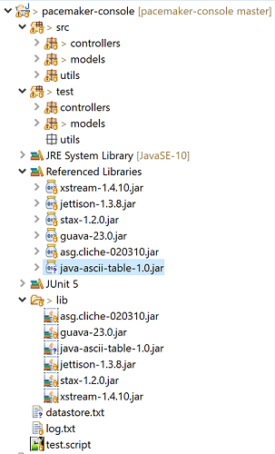

Refactor pacemaker to employ uuid instead of long ids. Unsure the tests as still passing as we make this transition. Make a start command line formatting features.
Currently we are using Long id for our users and activitiy objects:
public class Activity implements Serializable
{
static Long counter = 0l;
public Long id;public class User implements Serializable
{
static Long counter = 0l;
public Long id;This defines the structure of the various collections we are using:
public class PacemakerAPI
{
private Map<String, User> emailIndex = new HashMap<>();
private Map<Long, User> userIndex = new HashMap<>();
private Map<Long, Activity> activitiesIndex = new HashMap<>();While this works (more or less), you may have noticed some flaws. These center around the counters, stored as static members of the Activity and User classes respectively.
The role of these counters is to facilitate generation of id's when we create new objects. For example:
public User(String firstName, String lastName, String email, String password)
{
this.id = counter++;
...
}We are simply increasing the counter by one every time a new user is created.
Can you see any flaw in this approach?
Specifically, if you restart the app, and load a previously saved model - what will be the value of these counters? What happens when you insert a new User for instance?
See if you can perform an experiment to exercise the above scenario.
You may have seen that the problem with the last step was the ids were reset to 0 when the app was launched. Thus, any new users or activities would overwrite already created users/activities - corrupting the data structure.
This is clearly a serious bug - one not picked up by our unit tests. In fact it is a difficult bug to pick up in the test infrastructure and you may only be able to reproduce using the command line.
Out solution will be to abandon this approach completely - and adopt a different strategy for managing ids. We can switch to using Immutable Universally unique Identifiers
A generate for these ids is available in the JDK:
This seems like a significant change - effecting many aspects of the application. However, because we have a suite of unit tests in place, we can evolve the application in an orderly manner.
First, change the User class:
...
import java.util.UUID;
...
public class User implements Serializable
{
//static Long counter = 0l;
public String id;
...
public User(String firstName, String lastName, String email, String password)
{
//this.id = counter++;
this.id = UUID.randomUUID().toString();
..
}
...In the above we have commented out the counter - each new object receive a new unique id.
There will be errors throughout the application. We can start with the User Test class:
...
@Test
public void testIds()
{
Set<String> ids = new HashSet<>();
for (User user : users)
{
ids.add(user.id);
}
assertEquals (users.length, ids.size());
}
...The above version should now compile successfully. We should also be able to run just this test (even though there are errors elsewhere). It should pass.
The data structure can now altered to reflect the String id:
public class PacemakerAPI
{
...
private Map<String, User> userIndex = new HashMap<>();
...
@SuppressWarnings("unchecked")
public void load() throws Exception
{
serializer.read();
activitiesIndex = (Map<Long, Activity>) serializer.pop();
emailIndex = (Map<String, User>) serializer.pop();
userIndex = (Map<String, User>) serializer.pop();
}
...
}The PacemakerAPI class should now compile successfully.
We can now turn our attention to the unit tests - which have errors. These errors are as result of the API relying on Long ids. We will fix these in the PacemakerAPI class:
...
public User getUser(String id)
{
return userIndex.get(id);
}
...
public void deleteUser(String id)
{
User user = userIndex.remove(id);
emailIndex.remove(user.email);
}
...
public Activity createActivity(String id, String type, String location, double distance)
{
...
}
...The unit tests should now also compile successfully.
We should be in a position to run them all now - and they should pass.
Looking into our testdatstore.xml (if we dont delete it), we can see the new format of the id:
<object-stream>
<java.util.Stack serialization="custom">
<unserializable-parents/>
<vector>
<default>
<capacityIncrement>0</capacityIncrement>
<elementCount>3</elementCount>
<elementData>
<map>
<entry>
<string>071b8799-56e9-48cf-9d9e-565849c8456b</string>
<models.User>
<id>071b8799-56e9-48cf-9d9e-565849c8456b</id>
<firstName>marge</firstName>
<lastName>simpson</lastName>
<email>marge@simpson.com</email>
<password>secret</password>
...Main has a single error - which we can fix now:
@Command(description="Add an activity")
public void addActivity (@Param(name="user-id") String id,
@Param(name="type") String type,
@Param(name="location") String location,
@Param(name="distance") double distance)The id parameter above has been changed from Long to String.
You should be able to run the app successfully now.
In last weeks lab we referred to some useful utilities libraries for rendering tabular data:
In order to use this library, you will need to do two things:
For 1, you will need to have git installed, and then execute the following command:
git clone https://github.com/robinhowlett/java-ascii-table.gitThis will replicate the project locally.
For 2, you must first install maven:
Make sure to follow the installation instructions for your platform (note: download the binary and not the source zip). If installed correctly, the the following command should work correctly;
$ mvn -versionThis should return something like this:
Apache Maven 3.5.4 (1edded0938998edf8bf061f1ceb3cfdeccf443fe; 2018-06-17T19:33:14+01:00)
Maven home: C:\dev\apache-maven-3.5.4\bin\..
Java version: 10.0.2, vendor: Oracle Corporation, runtime: C:\Program Files\Java\jdk-10.0.2
Default locale: en_IE, platform encoding: Cp1252
OS name: "windows 10", version: "10.0", arch: "amd64", family: "windows"Next weeks topic includes an in depth review of Maven, so installing the package now is a useful preparation.
Once installed, we can enter this command from inside the folder containing the project you cloned:
$ mvn packageThis may take a few minutes to download and build all downstream components. It should finish successfully with something like this:
[INFO] Scanning for projects...
[INFO]
[INFO] ------------------< com.bethecoder:java-ascii-table >-------------------
[INFO] Building java-ascii-table 1.0
[INFO] --------------------------------[ jar ]---------------------------------
[INFO]
[INFO] --- maven-resources-plugin:2.6:resources (default-resources) @ java-ascii-table ---
[INFO] Using 'UTF-8' encoding to copy filtered resources.
[INFO] skip non existing resourceDirectory C:\Users\Siobhan\eclipse-workspace\java-ascii-table\src\main\resources
[INFO]
[INFO] --- maven-compiler-plugin:3.2:compile (default-compile) @ java-ascii-table ---
[INFO] Changes detected - recompiling the module!
[INFO] Compiling 7 source files to C:\Users\Siobhan\eclipse-workspace\java-ascii-table\target\classes
[WARNING] bootstrap class path not set in conjunction with -source 7
[WARNING] /C:/Users/Siobhan/eclipse-workspace/java-ascii-table/src/main/java/com/bethecoder/ascii_table/impl/CollectionASCIITableAware.java:[70,71] found raw type: java.lang.Class
missing type arguments for generic class java.lang.Class<T>
[INFO]
[INFO] --- maven-resources-plugin:2.6:testResources (default-testResources) @ java-ascii-table ---
[INFO] Using 'UTF-8' encoding to copy filtered resources.
[INFO] skip non existing resourceDirectory C:\Users\Siobhan\eclipse-workspace\java-ascii-table\src\test\resources
[INFO]
[INFO] --- maven-compiler-plugin:3.2:testCompile (default-testCompile) @ java-ascii-table ---
[INFO] No sources to compile
[INFO]
[INFO] --- maven-surefire-plugin:2.12.4:test (default-test) @ java-ascii-table ---
[INFO] No tests to run.
[INFO]
[INFO] --- maven-jar-plugin:2.4:jar (default-jar) @ java-ascii-table ---
[INFO] Building jar: C:\Users\Siobhan\eclipse-workspace\java-ascii-table\target\java-ascii-table-1.0.jar
[INFO] ------------------------------------------------------------------------
[INFO] BUILD SUCCESS
[INFO] ------------------------------------------------------------------------
[INFO] Total time: 9.045 s
[INFO] Finished at: 2018-10-03T12:15:38+01:00
[INFO] ------------------------------------------------------------------------It will have generated a jar file called java-ascii-table-1.0.jar into the ./target subfolder in the project. Copy this file intro your pacemaker/lib folder, and add the jar to your build path.
The project should look like this in Eclipse:

If you are having trouble with maven - here is a version of the jar file you can use without completing the above steps:
The readme for the library:
Contains just about enough guidance for using the library. Example 5 is simplest way in:
Employee stud = new Employee("Sriram", 2, "Chess", false, 987654321.21d);
Employee stud2 = new Employee("Sudhakar", 29, "Painting", true, 123456789.12d);
List<Employee> students = Arrays.asList(stud, stud2);
IASCIITableAware asciiTableAware = new CollectionASCIITableAware<Employee>(students, "name", "age", "married", "hobby", "salary");
ASCIITable.getInstance().printTable(asciiTableAware);Which will generate this output:
+----------+-----+---------+----------+----------------+
| NAME | AGE | MARRIED | HOBBY | SALARY |
+----------+-----+---------+----------+----------------+
| Sriram | 2 | false | Chess | 987,654,321.21 |
| Sudhakar | 29 | true | Painting | 123,456,789.12 |
+----------+-----+---------+----------+----------------+This is relatively self explanatory. However, before engaging in our application, we need to introduce the following methods to the User class
public String getFirstname()
{
return firstName;
}
public String getLastname()
{
return lastName;
}
public String getEmail()
{
return email;
}These are accessors, which the library will use in constructing the output table.
Hers is a revised version of the getusers() method in the Main class:
@Command(description="Get all users details")
public void getUsers ()
{
List<User> userList = new ArrayList<User> (paceApi.getUsers());
IASCIITableAware asciiTableAware = new CollectionASCIITableAware<User>(userList, "firstname", "lastname", "email");
ASCIITable.getInstance().printTable(asciiTableAware);
}This should now support the following user interaction:
Welcome to pacemaker-console - ?help for instructions
pm> cu homer simpson homer@simpson.com secret
pm> gu
+-----------+----------+-------------------+
| FIRSTNAME | LASTNAME | EMAIL |
+-----------+----------+-------------------+
| homer | simpson | homer@simpson.com |
+-----------+----------+-------------------+
pm>Looking at the above code again:
// generate a List of Users from the Collection of users returned by our api. ascii-table expects a list
List<User> userList = new ArrayList<User> (paceApi.getUsers());
// Pass the list + the names of the field we wish to display. Note: there must be an accessor method in each
// User object matching the names precisely
IASCIITableAware asciiTableAware = new CollectionASCIITableAware<User>(userList, "firstname", "lastname", "email");
// print the table
ASCIITable.getInstance().printTable(asciiTableAware);TableAware object - which is paramaterised by the type of our collection (User) + the user list itself, the the names of the fields we wish to appear in the table. NB: Where we are using camel-case attributes names (e.g lastName), it is very important to use convert to lower case the second capital letter (the N in lastName) when composing the accessors. This is due to a bug in the library.
Archive of the lab so far:
Consider refactoring Activity and Location classes to use an ID based on UUID as we have implemented for the User class. Make sure you also rework the tests and get used to relying on the these tests to ensure the project is evolving in an orderly manner.
Introduce ASCII table into all commands, following the example of step 05
Last week we referred you to this library:
This library arose as a result of inadequacies in date/time handing in the JDK. These have been largely resolved in Java 8, however there are some advantages to using Joda time:
There are, however, counter arguments. A useful discussion here:
Feel free to use either in your assignment.